Skip to content
Électroniques
Maison
Beauté
Santé
Cuisine
Outils
Sports
Jouets
Bébés
Mode
Extérieur
Animaux
Jeux Vidéos
Livres
Rechercher :
Électroniques
Maison
Beauté
Santé
Cuisine
Outils
Sports
Jouets
Bébés
Mode
Extérieur
Animaux
Jeux Vidéos
Livres
Rechercher :
Rechercher :
Accueil
>
Électroniques
Électroniques
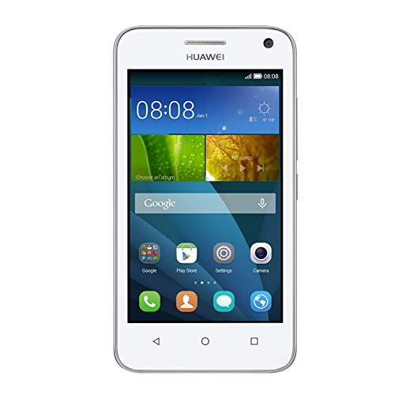
Huawei Y360 – Test et avis
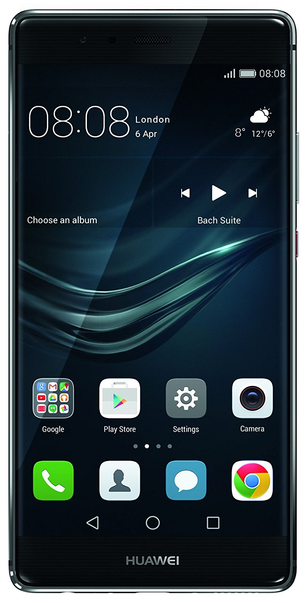
Huawei P9 Plus – Test et avis
Brother MFC-9340CDW – Test et avis
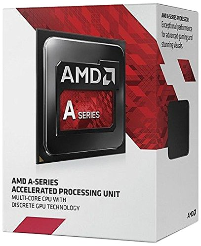
Amd A8 – Test et avis
Scala Rider Q1 – Test et avis
Asus Zenfone 4 Max – Test et avis
HP Officejet 3830 – Test et avis
Canon Pixma TS5050 – Test et avis
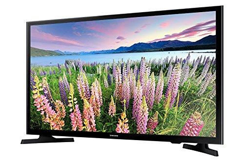
Samsung UE40J5000 – Test et avis
Kodak FZ151 – Test et avis
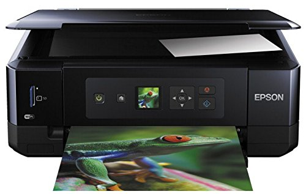
Imprimante Epson XP 530 – Test et avis
Yamaha YPT 240 – Test et avis
Station Météo Couleur Grand Ecran WS6835 – Test et avis
Nikon L840 – Test et avis
Surjeteuse Brother 1334D – Test et avis
Razer Kraken 7.1 Chroma – Test et avis
Asus K31AN – Test et avis
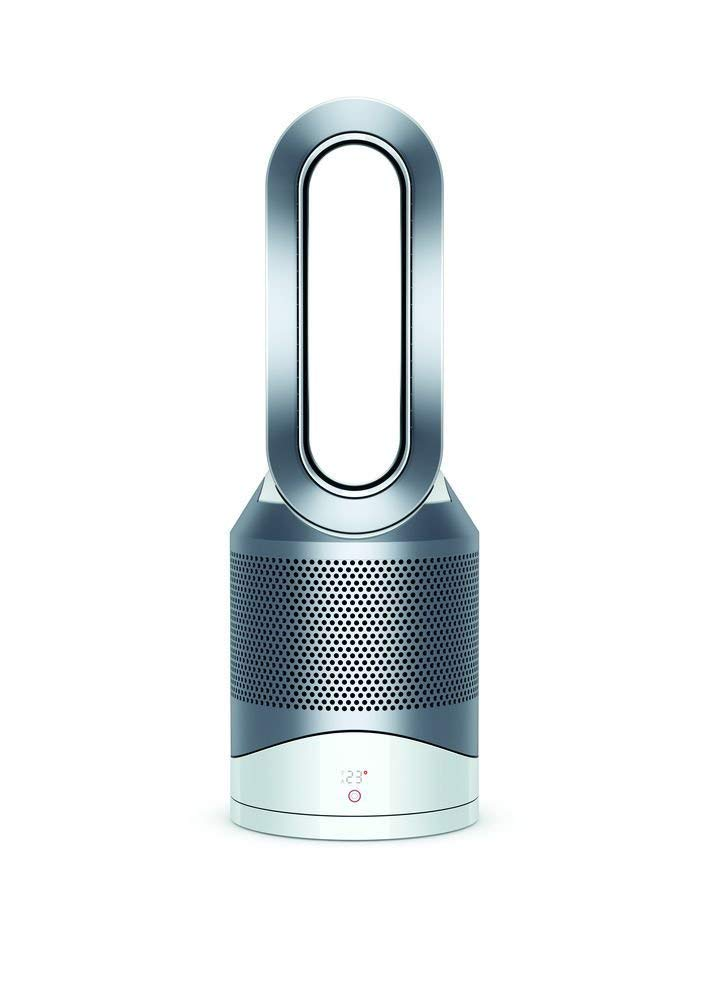
Dyson Pure Hot + Cool Link – Test et avis
Yamaha PSR F50 – Test et avis
Muse M 1350 BTC – Test et avis
Tectectec Xpro3 – Test et avis
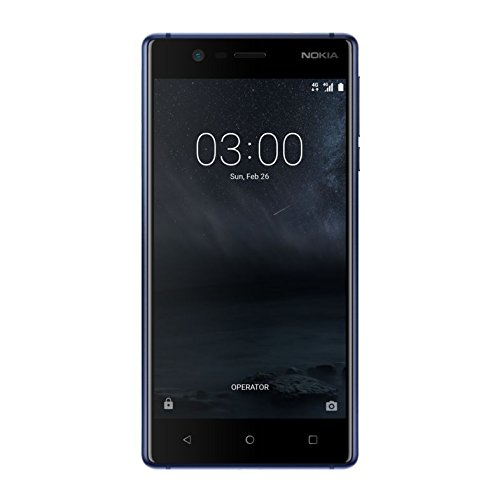
Nokia 3 – test et avis
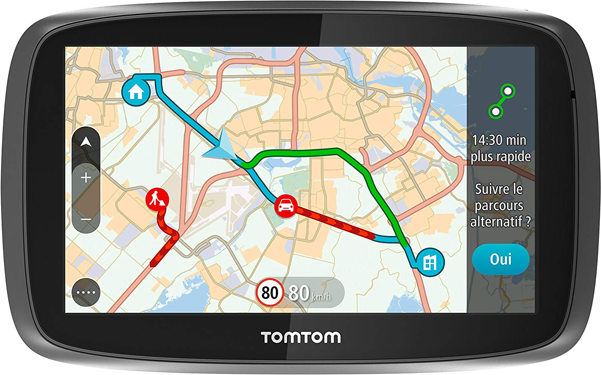
Tomtom GO 6100 – Test et avis
Tablette Lenovo Tab2 A10-30 – Test et avis
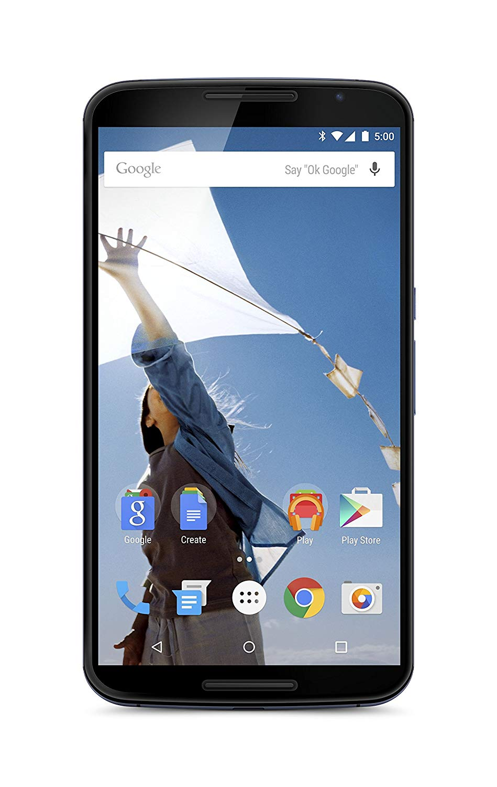
Nexus 6 – Test et avis
Caliber BC108US – Test et avis
Elephone P9000 – Test et avis
Marshall Major 2 – Test et avis
Epson Workforce WF-3620dwf – Test et avis
Hp Elitebook 840 G3 – Test et avis
Harman Kardon Omni 10 – Test et avis
Benq TW529 – Test et avis
Hp Officejet Pro 6970 – Test et avis
Philips DSR 3031 Fransat – Test et avis
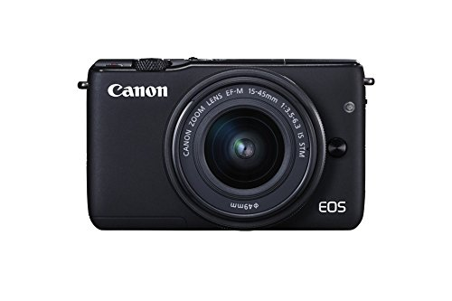
Canon EOS M10 – Test et avis
Hp Officejet 4657 – Test et avis
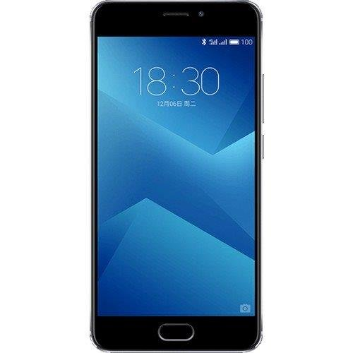
Meizu M5 Note – Test et avis
Asus Z300M-6B032A – Test et avis
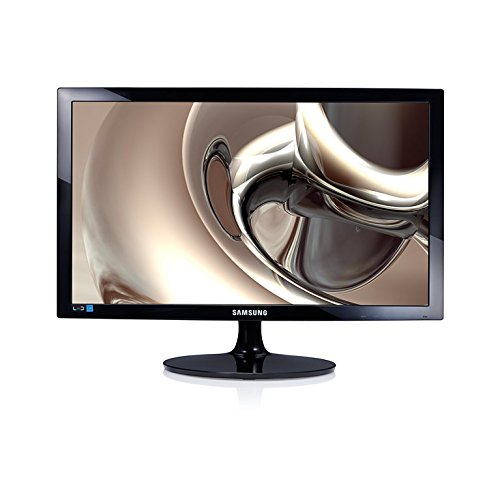
Samsung S24D340H – Test et avis
Num’axes SL1008 – Test et avis
GPS Mappy E538 – Test et avis
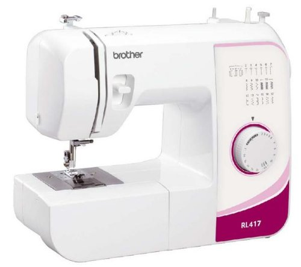
Brother RL 417 – Test et avis
Garmin Drive 50LM – Test et avis
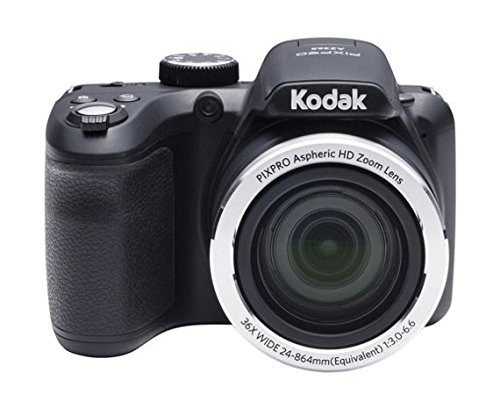
Kodak AZ365 – Test et avis
H96 Pro Plus – Test et avis
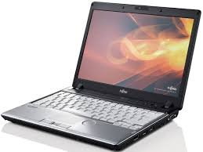
Hp Probook 6470B – Test et avis
Velo Electrique Moma E Bike 26 – Test et avis
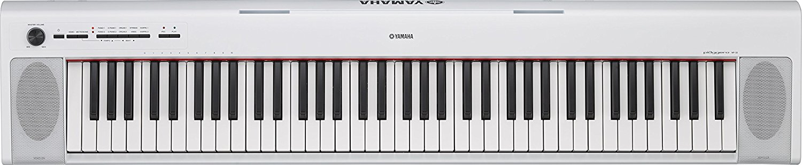
Yamaha NP 32 – Test et avis
Steelseries Siberia 200 – Test et avis
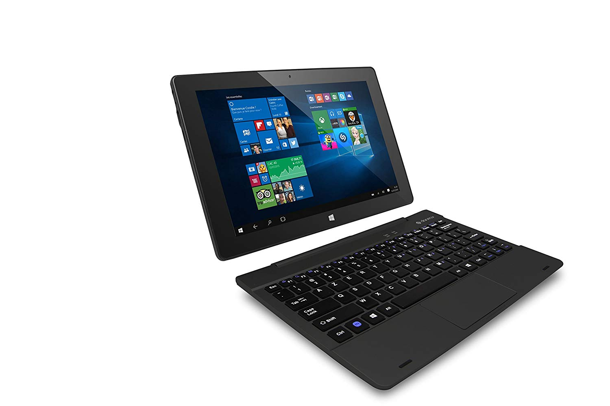
Tablette Danew I1014 – Test et avis
Objectif Tamron 18-200 – Test et avis
Leagoo Elite 5 – Test et avis
Gear Fit 2 – Test et avis
Irispen Executive 7 – Test et avis
Whirlpool FSCR80421 – Test et avis
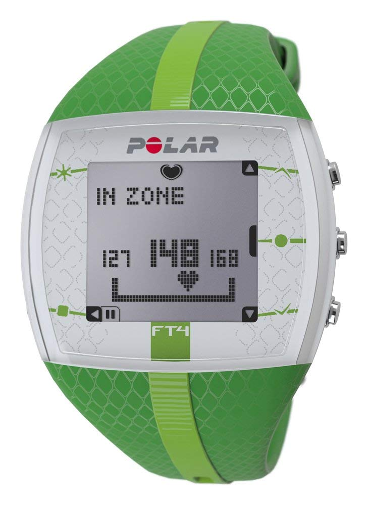
Polar FT4 – Test et avis
Lenovo 110-17ACL – Test et avis
Asus Zenfone 3 Deluxe – Test et avis
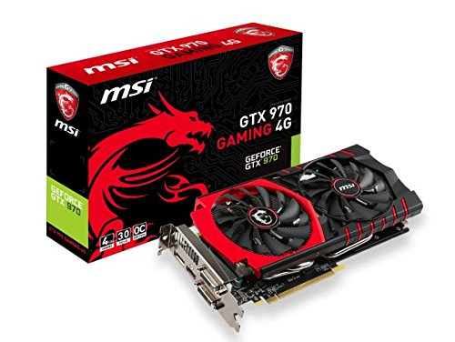
GTX 970 – Test et avis
Lenovo Yoga 510 – Test et avis
Sony Xperia E5 Noir – Test et avis
Bosch WAE28210FF – Test et avis
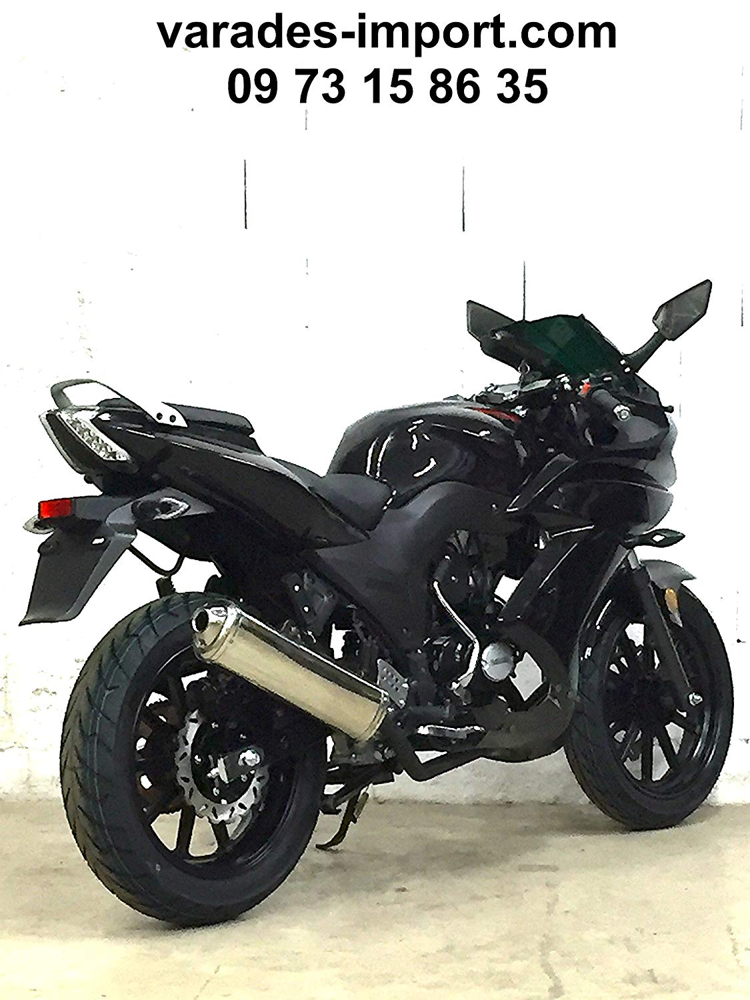
Yamasaki 50CC – Test et avis
Garmin Forerunner 35 – Test et avis
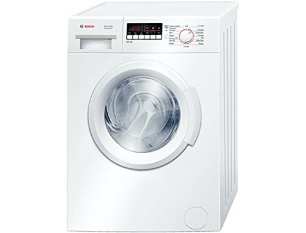
Bosch WAB24211FF – Test et avis
Acer Predator GN246hlbbid – Test et avis
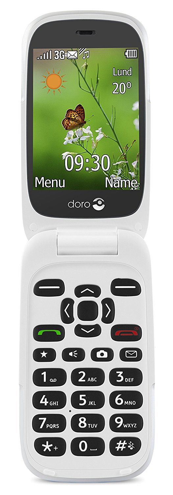
Doro 6530 – Test et avis
Danew Dslide 1013QC – Test et avis
Delonghi Esam 3200S Magnifica – Test et avis
Excelvan CL720d – Test et avis
Samsung HW J450 – Test et avis
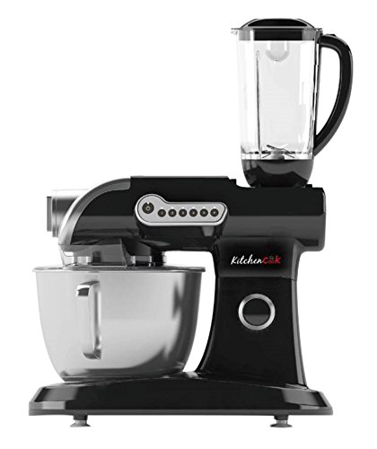
Kitchencook Evolution V3 – Test et avis
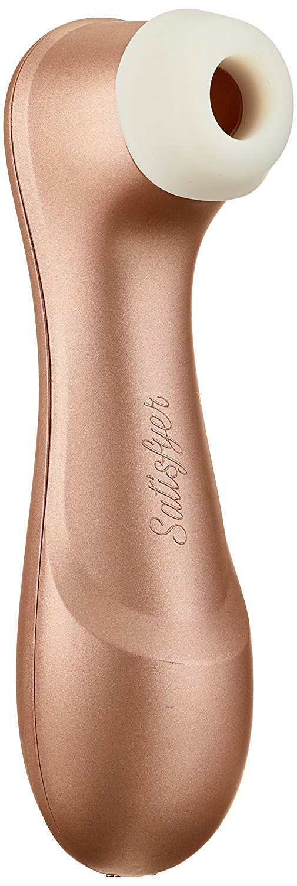
Satisfyer Pro 2 – Test et avis
Lenovo H30-05 – Test et avis
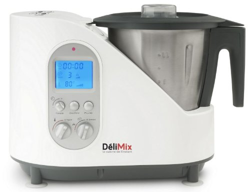
Delimix QC350 – Test et avis
Jawbone Up3 – Test et avis
Dell Optiplex 780 – Test et avis
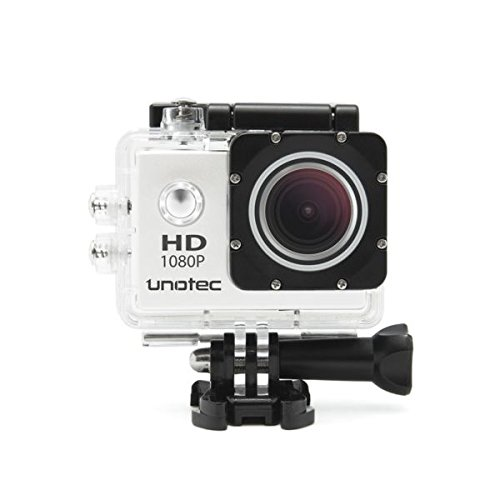
Uunotec Xtr Pro – Test et avis
HP Deskjet 2130 – Test et avis
Samsung J1 Mini – Test et avis
Dolphin Nauty TC – Test et avis
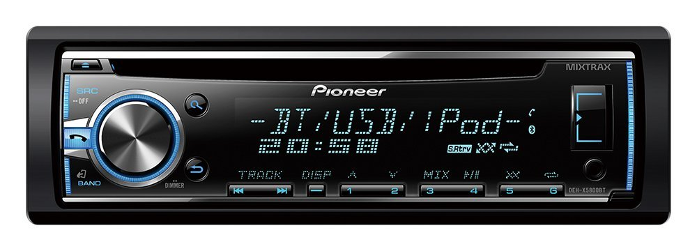
Pioneer Deh-X5800bt – Test et avis
Singer Brilliance 6180 – Test et avis
Samsung UE48j5200 – Test et avis
Nikon Coolpix B500 – Test et avis
Asus Zenfone Go – Test et avis
Karcher Sc5 – Test et avis
Pfaff Passport 2.0 – Test et avis
Singer Simple 3223 – Test et avis
Acer Aspire R3-131T – Test et avis
Energizer Energy 400 – Test et avis
Imprimante Hp Envy 5547 – Test et avis
Canon Powershot SX710 Hs – Test et avis
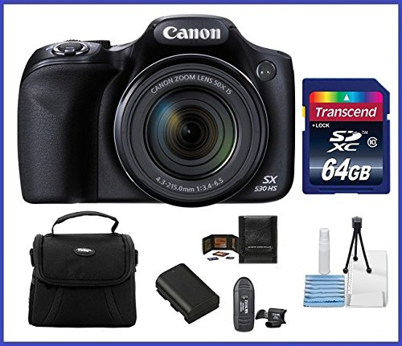
Canon Powershot SX530 Hs – Test et avis
Brother MFC-9330Cdw – Test et avis
Crosscall Trekker X2 – Test et avis
Canon 80D – Test et avis
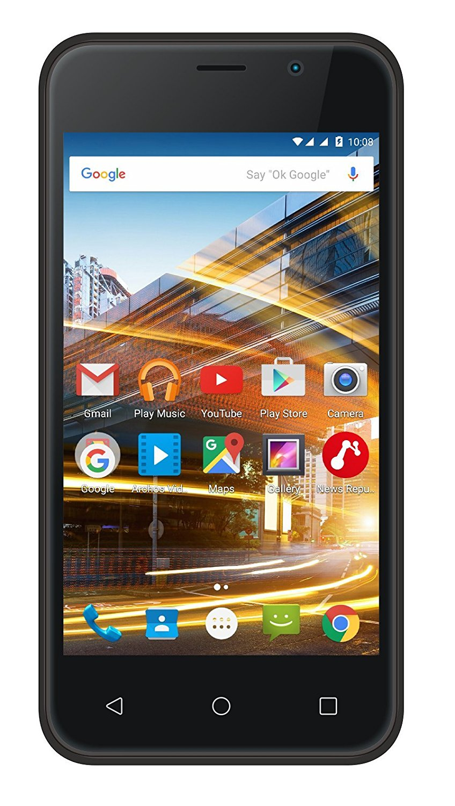
Archos 40 Neon – Test et avis
Sony Smartwatch 2 – Test et avis